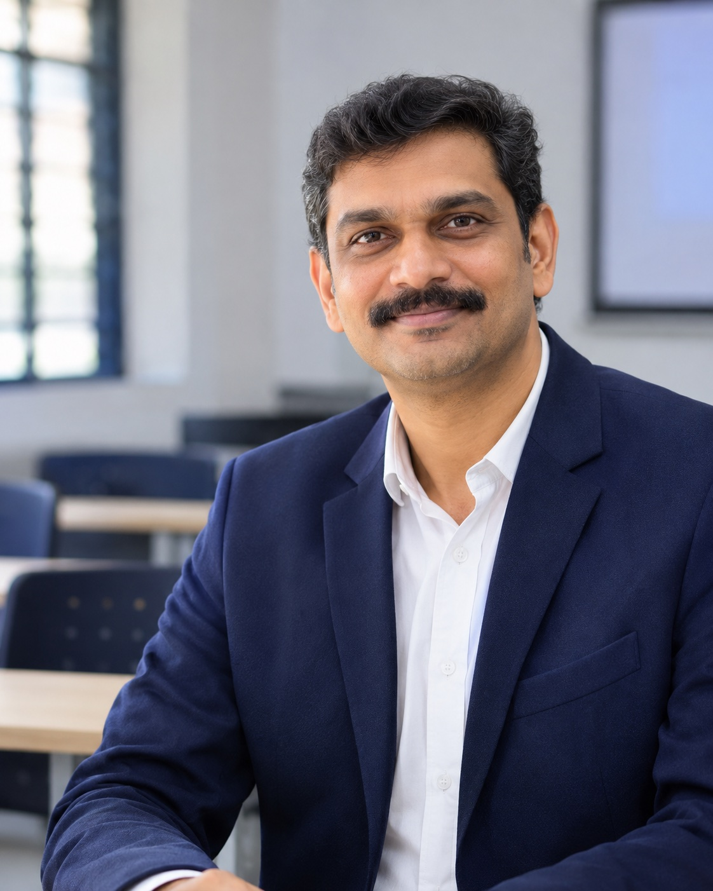
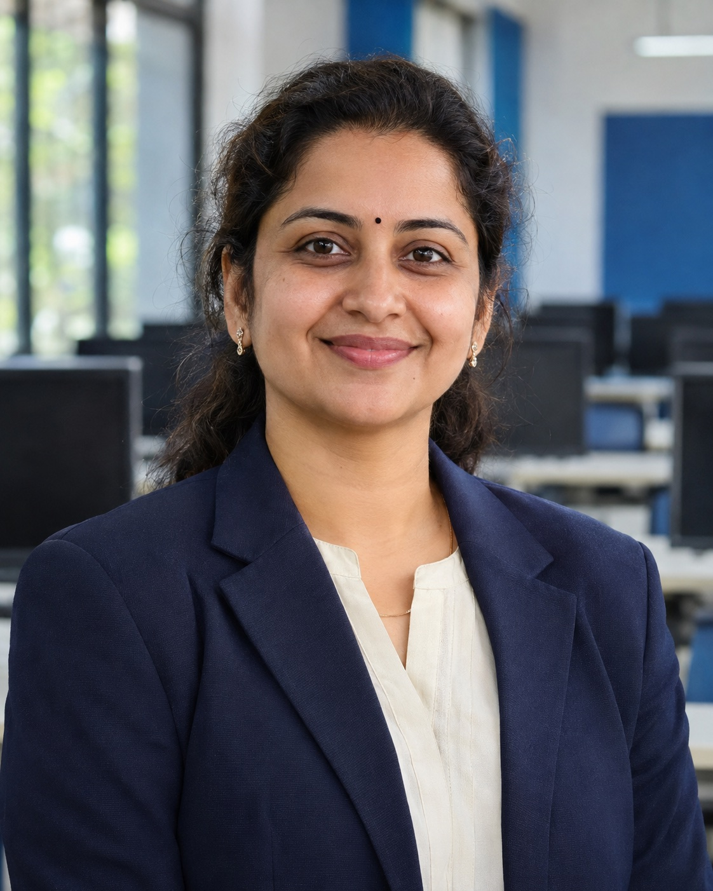
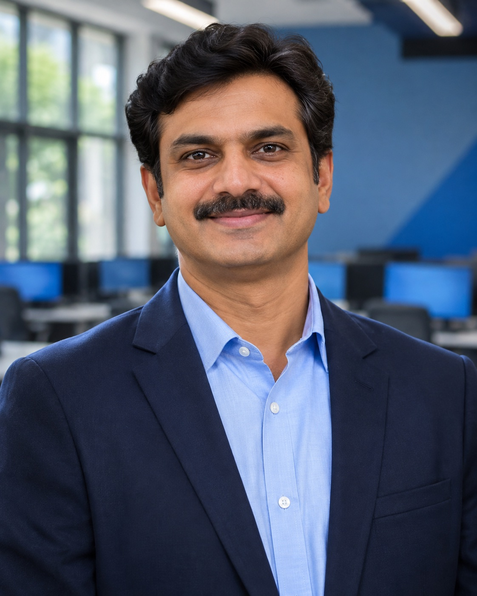

Ananya Nair
QUALIFICATIONPhD, Strategic Management · University of Calicut
FACULTY & INDUSTRY VOICES · MBA + MCA
Across management and computer applications, strong teaching connects the foundations to the questions students will meet in the world of work.
FACULTY DIRECTORY
Design preview: names, qualifications and portraits are illustrative sample profiles, not a confirmed LEAD faculty directory. AI-generated portraits are labelled on the cards.
01 DEPARTMENT OF MANAGEMENT STUDIES
Explore sample faculty and practitioner profiles across strategy, finance and entrepreneurship.
QUALIFICATIONPhD, Strategic Management · University of Calicut

QUALIFICATIONMBA, Finance · IIM Kozhikode

QUALIFICATIONPGDM, Entrepreneurship · LIBA Chennai

QUALIFICATIONMBA, Marketing · MICA Ahmedabad
02 DEPARTMENT OF COMPUTER APPLICATIONS
Sample voices bring computing fundamentals into conversation with products, data and the way technology is built.

AI-GENERATED SAMPLEQUALIFICATIONPhD, Computer Science · NIT Calicut

QUALIFICATIONMCA · Cochin University of Science and Technology

AI-GENERATED SAMPLEQUALIFICATIONMTech, Computer Science · NIT Calicut

AI-GENERATED SAMPLEQUALIFICATIONMTech, Software Systems · VIT Vellore
THE LEARNING EXPERIENCE
Faculty, researchers and industry voices help students move between understanding a subject and using it with confidence.
Make the key ideas clear, connected and ready to question.
Use cases and practitioner insight to understand how decisions happen.
Carry the ideas into projects, discussion and collaborative work.
EXPLORE THE PROGRAMMES